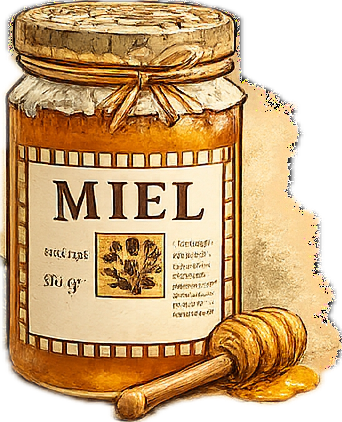
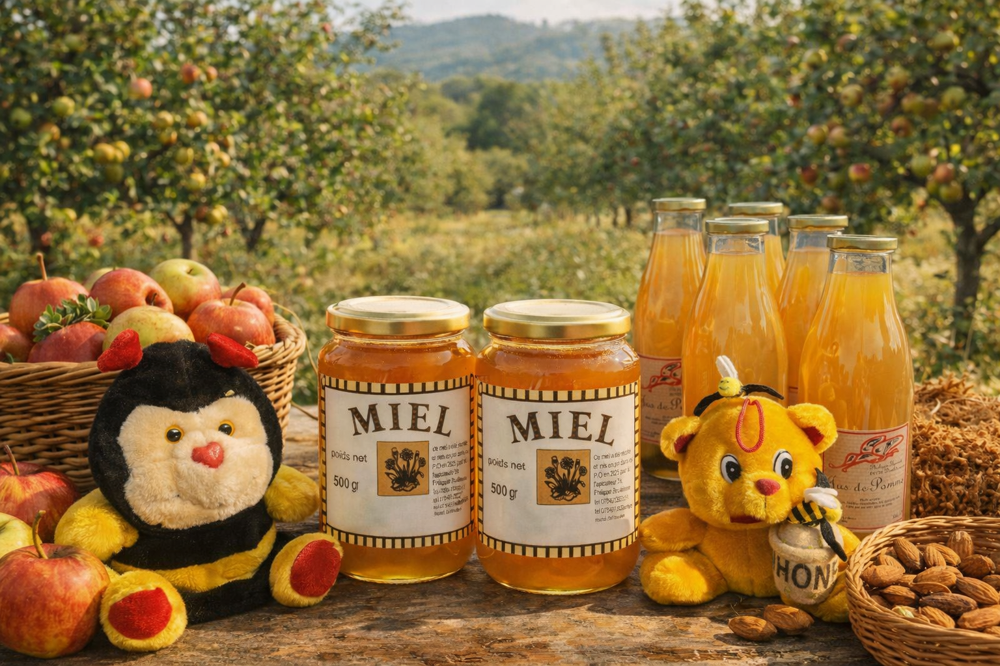
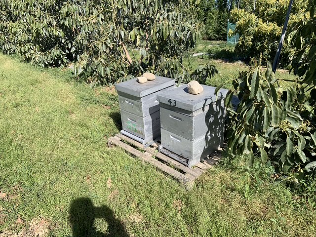
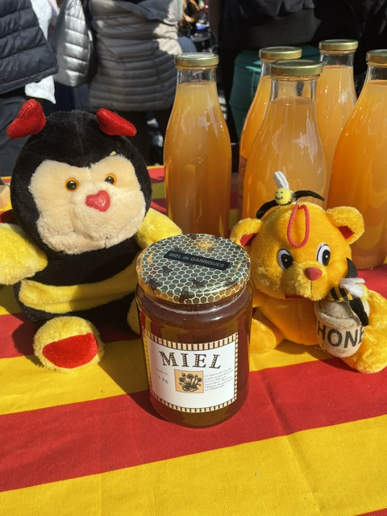
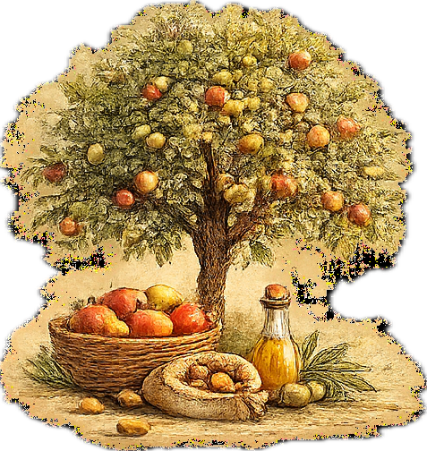

Les miels
Récoltés au fil des floraisons — chacun lié à un paysage.
RomarinLavandeFleurs sauvagesChâtaignier
Nouveau — Miel d'avocat
Apiculteur et producteur en circuit court. Chaque récolte suit les saisons ; chaque produit raconte un paysage.


Je m'appelle Philippe Thorent. Je suis apiculteur et producteur à Boulternère, dans le Roussillon. Je travaille avec les abeilles et le verger pour produire des miels artisanaux, du jus de pomme, de l'huile d'olive et d'autres produits fermiers.
Ici, chaque récolte suit les saisons, et chaque produit raconte un paysage.
Mon histoire et ma démarcheRien n'est standardisé : chaque récolte dépend du climat, des floraisons, du vivant. Tout est proposé en vente directe ou en circuit court, à Boulternère et autour.

Récoltés au fil des floraisons — chacun lié à un paysage.

Un pur jus multi-variétés, issu du verger, sans sucre ajouté.

Simples, locaux, faits au rythme naturel.
Les miels suivent les floraisons, le jus vient du verger. C'est le climat qui décide, pas le calendrier.
Tout est vendu sur place ou tout près, à Boulternère et alentour. Vous savez d'où vient ce que vous achetez.
Récolte au fil de l'année, sans standardisation, dans le respect des abeilles et du terroir.
Nos abeilles butinent les vergers d'avocatiers de la famille — un miel rare, profondément local.
Vente directe sur place. Lancez l'itinéraire depuis votre téléphone.
Route de Corbère
Lieu-dit « Foun Del Boulès »
66130 Bouleternère
06 14 52 28 00
| Lundi | 8 h–12 h · 14 h–18 h |
|---|---|
| Mardi | 8 h–12 h · 14 h–18 h |
| Mercredi | 8 h–12 h · 14 h–18 h |
| Jeudi | Fermé |
| Vendredi | 8 h–12 h · 14 h–18 h |
| Samedi | 8 h–12 h |
| Dimanche | Fermé |
Recevez un message avant chaque vente : miels de saison, jus de pomme, huile nouvelle…
Ou appelez directement le 06 14 52 28 00.